Rafael E. González Otaya
Tema Desarrollo de video juegos en el Perú: tecnología, innovación y oportunidades laborales
Fecha y hora Modalidad · Virtual
El punto de encuentro donde la tecnología, las ideas y el talento universitario construyen lo que sigue.
Antecedentes CATEC
Dos jornadas para escuchar, experimentar y encontrarte con personas que también quieren crear lo que sigue.
Ponentes
Tema Desarrollo de video juegos en el Perú: tecnología, innovación y oportunidades laborales
Fecha y hora Modalidad · Virtual
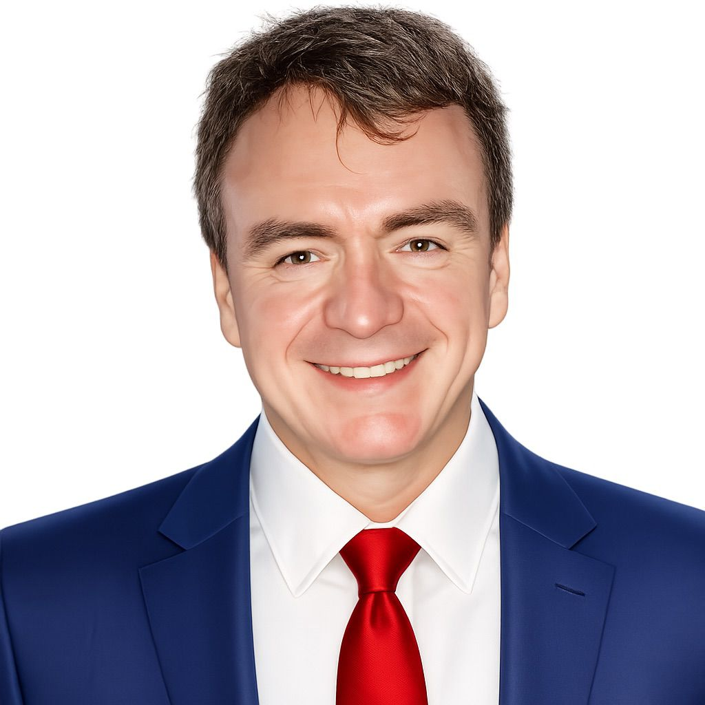
Tema Transformación digital, revolución 4.0 y evolución de la IA
Fecha y hora Modalidad · Virtual
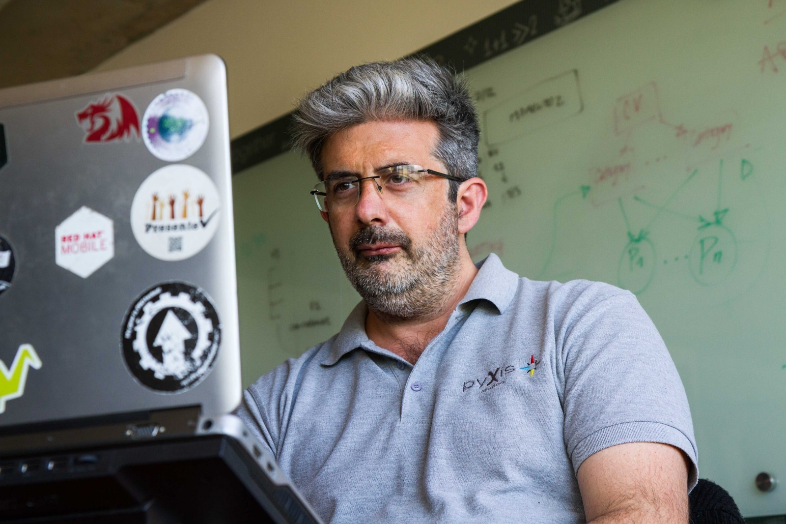
Tema IA como copiloto: de la idea a un proyecto de TI confiable
Fecha y hora Modalidad · Virtual
Tema Registro de software ante Indecopi
Fecha y hora Modalidad · Presencial

Tema Swappings blockchain
Fecha y hora Modalidad · Virtual
Acerca de
CATEC es un evento académico y tecnológico impulsado por estudiantes de la Escuela Profesional de Ingeniería de Sistemas de la Universidad Privada de Tacna. Una experiencia para aprender, compartir y acercarnos a las tecnologías que están transformando nuestra profesión.
Experiencias, herramientas y perspectivas que conectan la teoría con retos reales.
Especialistas y profesionales dispuestos a compartir el camino detrás de su trabajo.
Un espacio para encontrarnos, hacer preguntas y crear nuevas conexiones.
Un encuentro para aprender, compartir ideas y construir nuevas conexiones.
Inscripciones
Revisa los detalles de cada actividad, consulta sus bases y completa tu inscripción para participar en CATEC 2026-II.
Agenda
Rafael E. González Otaya
Ingeniero de Sistemas e Informática
Marcelo O. Martínez
Maestría en Ingeniería de Software
Inicio de la competencia
Actividad nocturna de CATEC 2026-II
Competencia de programación
Actividad presencial de CATEC 2026-II
Carlos A. García Vezzoso
Bachiller tecnológico
Luis A. Fernández Vizcarra
Doctor en Ingeniería de Sistemas

Thomas A. Sorza Sierra
Ingeniero de Sistemas y Computación
Ubicación
CATEC se realizará en la Facultad de Ingeniería de la Universidad Privada de Tacna, en el distrito de Pocollay.
Patrocinadores
Organizaciones que se suman para hacer posible una experiencia de aprendizaje, tecnología y comunidad.
 Pronta Pizza
Pronta Pizza
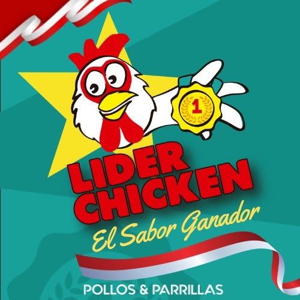
Pollos y Parillas Lider Chicken Zheros Express
Zheros Express
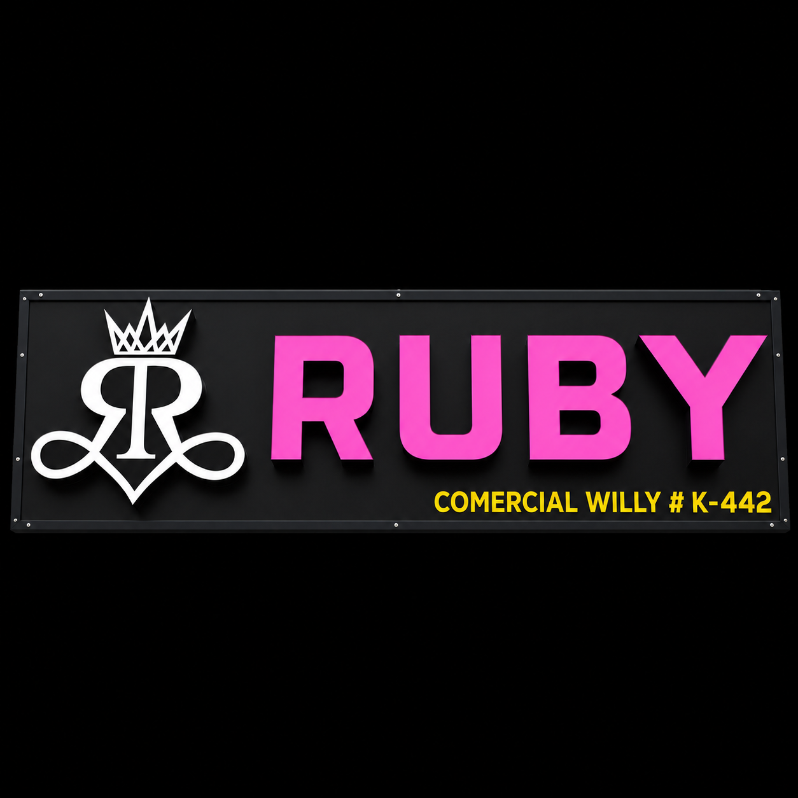
Comercial Ruby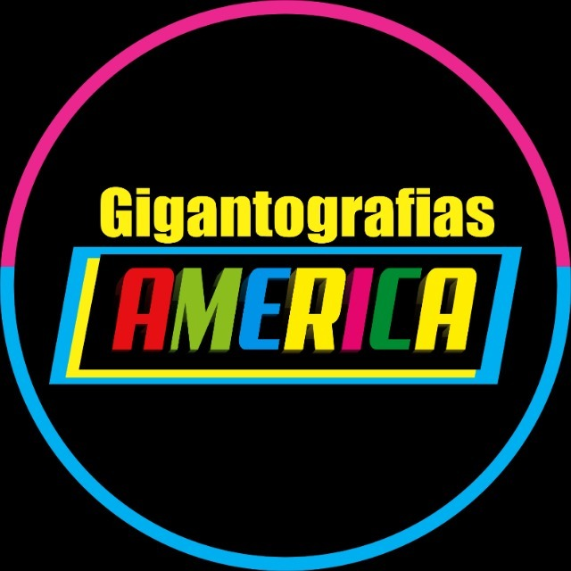
Gigantografia America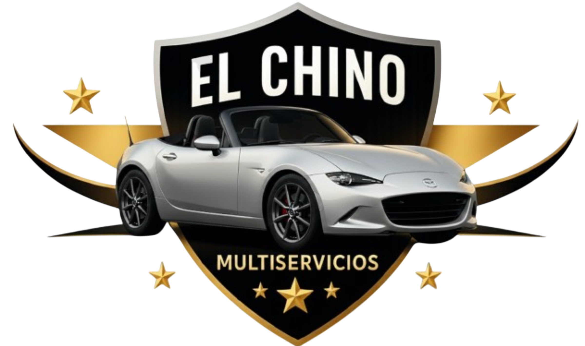
Multiservicios "El Chino"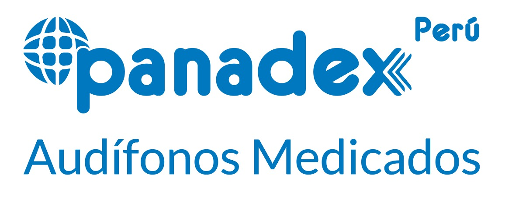
Panadex Cevicheria Justina
Cevicheria Justina
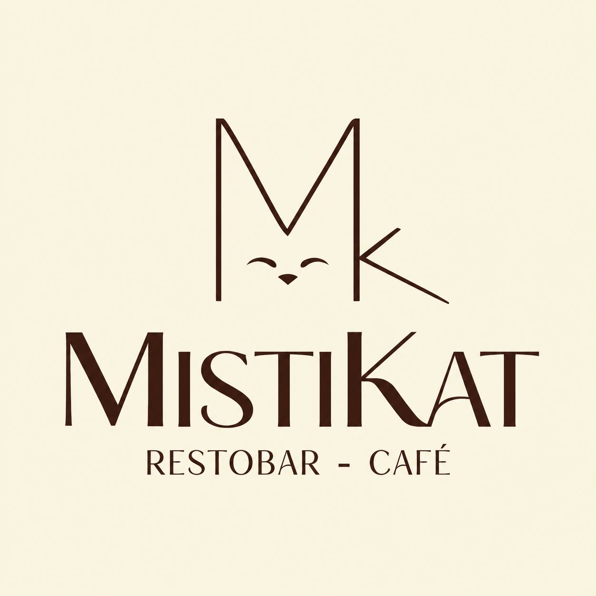
MistiKat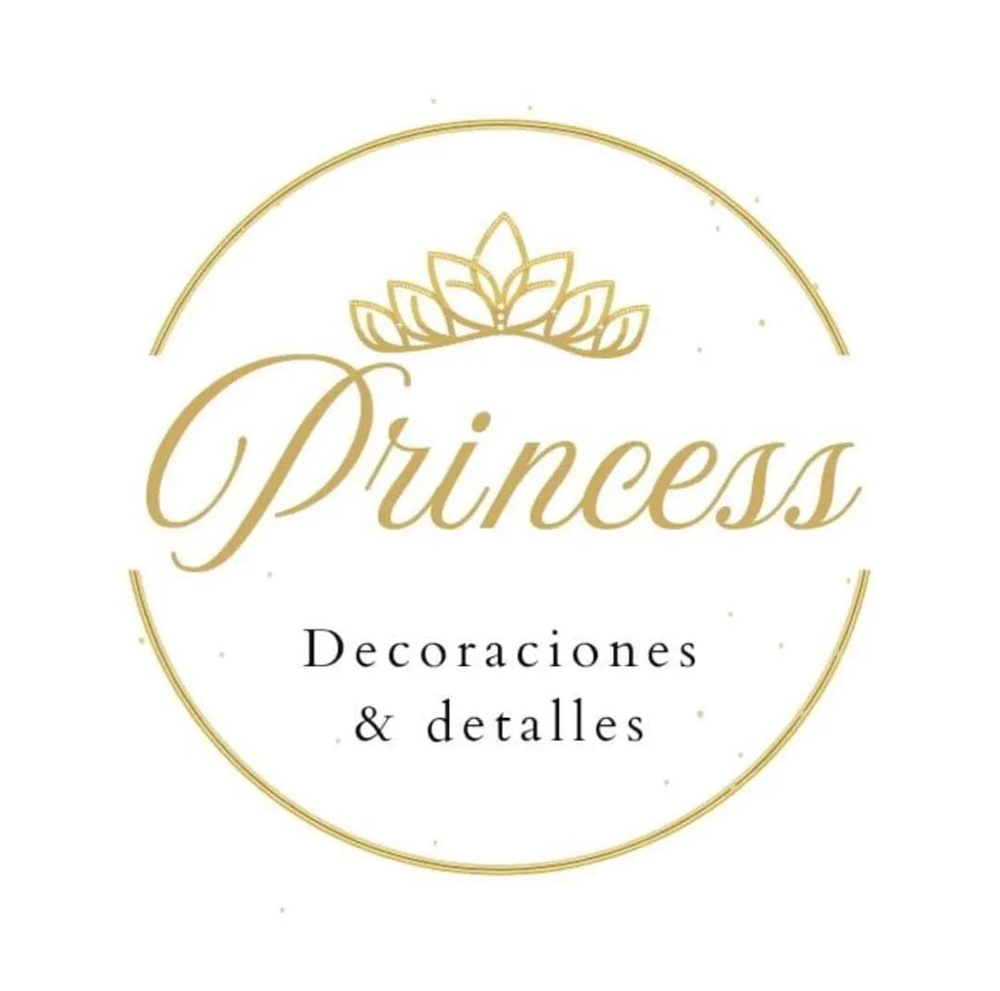
Princess Decoraciones y Detalles Sauna el Eden del Cono Sur
Sauna el Eden del Cono Sur
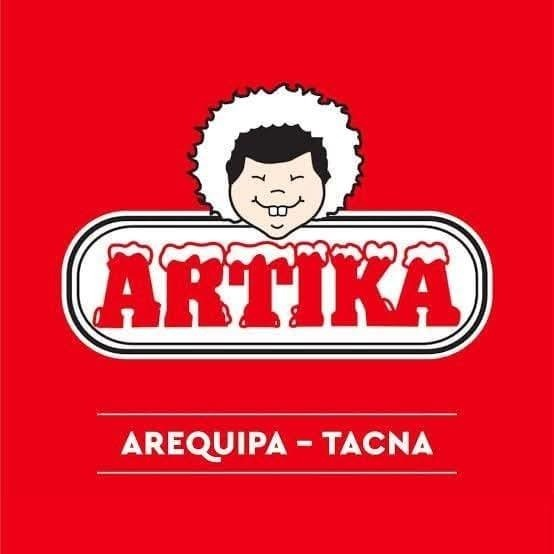
Helados Artika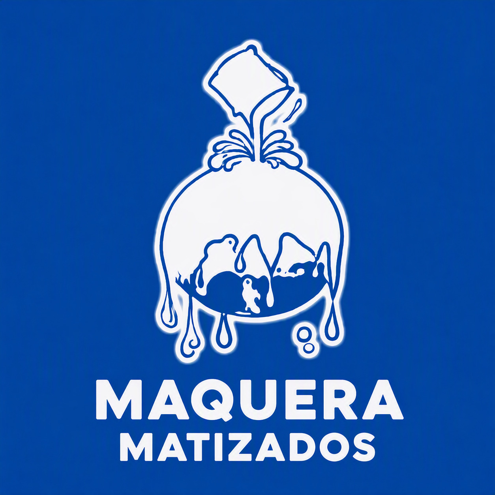
Matizados Maquera Shugaa Salón de Té
Shugaa Salón de Té